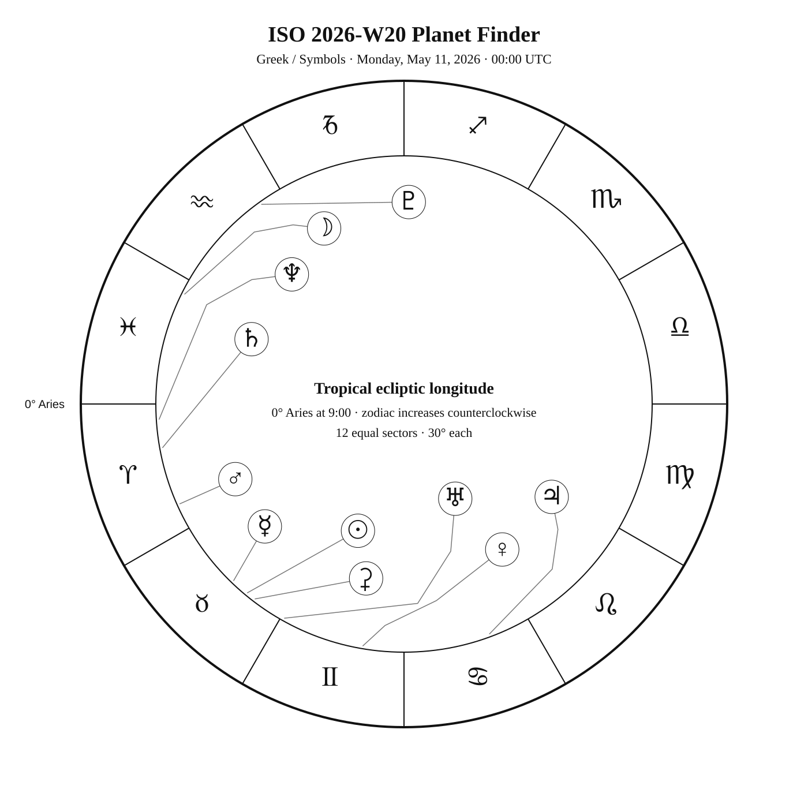
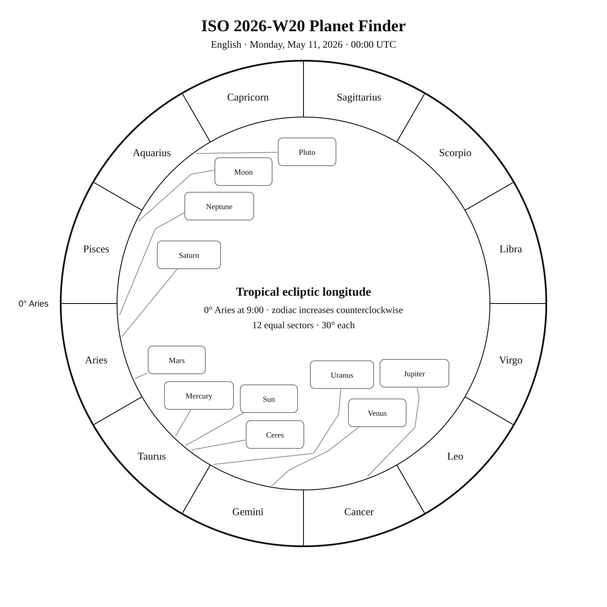
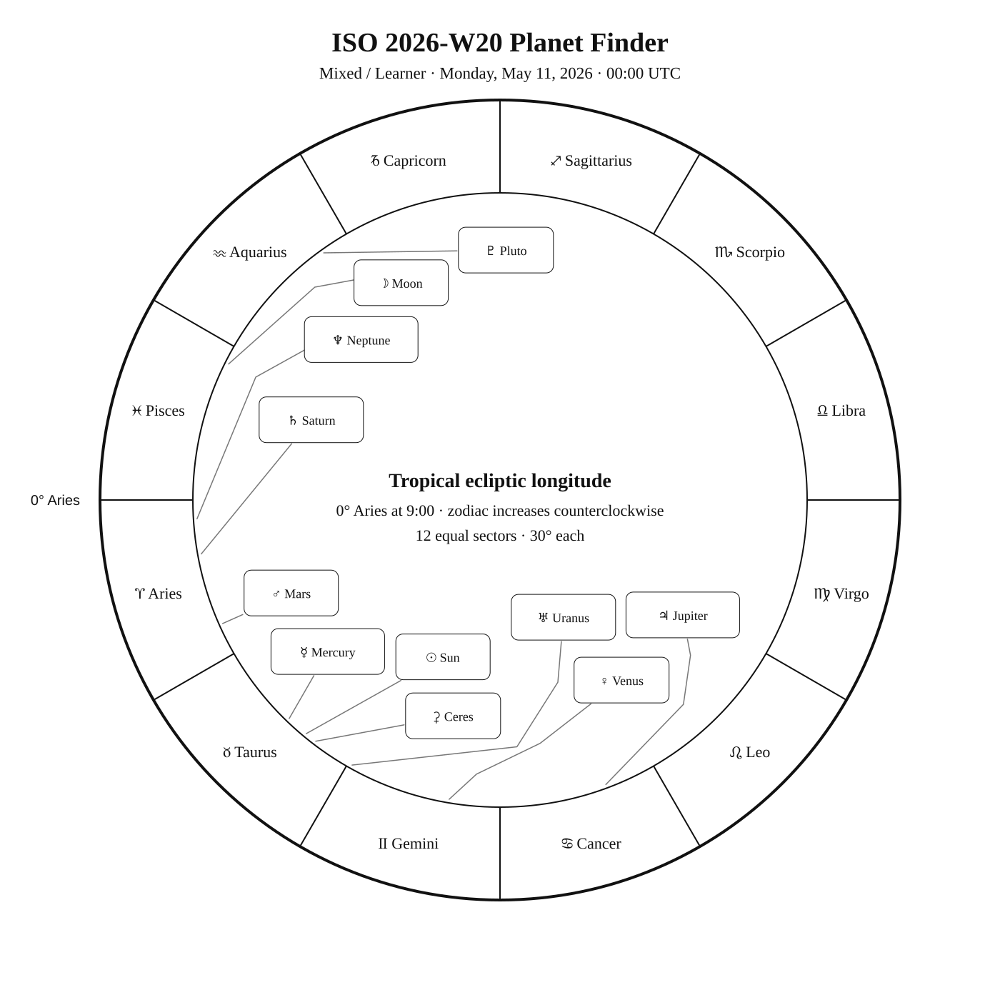

ISO 2026-W20
Week begins: Monday, May 11, 2026
Calendar
| Date | Zodiac day | Events |
|---|---|---|
| Mon, May 11, 2026 | ♉ 22 | Finest NGC 47 / NGC 4157 · MCG 9-20-106 —  12 12.1 — Northern Spring 12 12.1 — Northern Spring |
| Tue, May 12, 2026 | ♉ 23 | M98 — 10 10.1 — Tropical SpringFinest NGC 60 / NGC 4214 · MCG 6-27-42 — 10 10.2 — Northern SpringFinest NGC 76 / NGC 4216 · MCG 2-31-72 — 11 11.0 — Tropical SpringC3 / NGC 4236 — 10 9.7 — Arctic Spring |
| Wed, May 13, 2026 | ♉ 24 | Finest NGC 61 / NGC 4244 · Silver Needle / C26 / NGC 4244 — 10 10.4 — Northern Springβ Cha —  4 4.2 — Antarctic Spring 4 4.2 — Antarctic SpringM99 — 10 9.9 — Tropical SpringM106 — 8 8.4 — Northern SpringFinest NGC 68 / NGC 4274 · MCG 5-29-60 — 11 11.3 — Northern Spring |
| Thu, May 14, 2026 | ♉ 25 | M61 — 10 9.7 — Tropical SpringM40 — 8 8.4 — Northern SpringM100 — 9 9.3 — Tropical SpringFinest NGC 75 / NGC 4361 — 11 10.9 — Tropical SpringM84 — 9 9.1 — Tropical Spring |
| Fri, May 15, 2026 | ♉ 26 | M85 — 9 9.1 — Tropical SpringFinest NGC 77 / NGC 4388 · MCG 2-32-41 — 12 11.9 — Tropical SpringC108 / NGC 4372 — 8 7.8 — Antarctic SpringM86 — 9 8.9 — Tropical SpringFinest NGC 69 / NGC 4414 · MCG 5-29-85 — 11 11.0 — Northern SpringAcrux (α1 Cru) —  1 1.3 — Southern Spring 1 1.3 — Southern Springα2 Cru — 2 1.6 — Southern SpringFinest NGC 78 / NGC 4438 · The Eyes with 4435 — 11 10.9 — Tropical SpringFinest NGC 62 / NGC 4449 · MCG 7-26-9 / C21 / NGC 4449 — 10 9.5 — Northern Spring |
| Sat, May 16, 2026 | ♉ 27 | 🌑 New Moon — 20:01:03 UTC M49 — 8 8.4 — Tropical SpringFinest NGC 63 / NGC 4490 · Cocoon Galaxy — 10 9.8 — Northern SpringM87 — 9 8.6 — Tropical SpringGacrux (γ Cru) — 2 1.6 — Southern SpringFinest NGC 70 / NGC 4494 · MCG 4-30-2 — 11 10.7 — Northern SpringM88 — 10 9.6 — Tropical SpringFinest NGC 79 / NGC 4517 · often mislabeled NGC 4437 — 11 11.1 — Tropical Spring |
| Sun, May 17, 2026 | ♉ 28 | Chara (β CVn) — 4 4.2 — Northern SpringFinest NGC 80 / NGC 4526 · MCG 1-32-100 — 11 10.6 — Tropical SpringFinest NGC 81 / NGC 4535 · Lost Galaxy — 11 10.5 — Tropical SpringKraz (β Crv) — 3 2.7 — Tropical SpringM91 — 10 10.2 — Tropical SpringM89 — 10 9.8 — Tropical SpringFinest NGC 71 / NGC 4559 · MCG 5-30-30 / C36 / NGC 4559 — 10 10.3 — Northern SpringC38 / NGC 4565 · Needle Galaxy / Finest NGC 72 / NGC 4565 · Needle Galaxy — 10 9.6 — Northern SpringFinest NGC 82a / NGC 4567 · Siamese Twins — 12 12.1 — Tropical SpringFinest NGC 82b / NGC 4568 · Siamese Twins — 12 11.7 — Tropical SpringM90 — 10 9.5 — Tropical Springα Mus — 3 2.7 — Antarctic Spring |
Weekly Solar-System Ephemeris
Snapshot: Week begins May 11, 2026, 00:00 UTC.
(-90° to +90°; defaults +45°, 21:00 LAT)
| Body | ☉︎ | ☽︎ | ☿︎ | ♀︎ | ♂︎ | ♃︎ | ♄︎ |
|---|---|---|---|---|---|---|---|
| Ecliptic | ♉︎ 20°20′ β −0°00′ | ♓︎ 3°23′ β −0°13′ | ♉︎ 16°02′ β −0°29′ | ♊︎ 20°21′ β +1°19′ | ♈︎ 24°00′ β −0°49′ | ♋︎ 20°24′ β +0°24′ | ♈︎ 10°14′ β −2°12′ |
| Observing |  | -9.6 | ☉︎ | -3.9 | 1.2 | -2.0 | 0.9 |
| Rise | 04:40 | 01:50 | 04:33 | 06:14 | 03:41 | 08:36 | 03:19 |
| Set | 19:20 | 12:30 | 18:54 | 21:58 | 16:56 | 23:58 | 15:40 |
Extended targets:
| Body | ⚳︎ | ♅︎ | ♆︎ | ♇︎ |
|---|---|---|---|---|
| Ecliptic | ♉︎ 22°37′ β −3°35′ | ♊︎ 0°50′ β −0°10′ | ♈︎ 3°34′ β −1°20′ | ♒︎ 5°30′ β −4°05′ |
| Observing | ☉︎ | ☉︎ | 7.8 | 14.5 |
| Rise | 05:08 | 05:14 | 03:00 | 01:00 |
| Set | 19:18 | 20:13 | 15:07 | 09:48 |
β = ecliptic latitude (+ north, − south).
Rise and set are Local Apparent Time for the selected latitude.
Naked-eye observing uses the Sun’s altitude at the selected Monday observer time: Daylight (Sun ≥ −0.833°), Civil twilight (−0.833° to −6°), Nautical twilight (−6° to −12°), Astronomical twilight (−12° to −18°), and Night (below −18°).
Solar Glare identifies a body too close to the Sun when the sky-state rule does not already supersede its naked-eye classification.
The Sun’s observing status uses this same five-state sky classification.
Planet Finder



Sky Notes
Kilroy: Sky Notes · generated 2026-10-21 00:12:24 UTC
ISO 2026-W20 runs from May 11 through May 17. Venus is about 2.2° in ecliptic longitude from Elnath in Taurus.

Naked eye: 🌑 New Moon — 20:01:03 UTC. The dark Moon favors faint targets and extended star fields. Use Acrux, Alpha2 Cru, Gacrux, Kraz, α Mus as the week’s fixed-sky framework.

Alpha2 Cru — Alpha2 Cru is a star in Cru; its declination determines which latitudes can observe it.
Gacrux — Gacrux is a star in Cru; its declination determines which latitudes can observe it.
Planets: Moon: Naked eye; magnitude -9.6; direct motion; 38.8% illuminated. Below the horizon at 21:00 local apparent solar time, 45°N. Monday 00:00 UTC snapshot. Solar conjunction in ecliptic longitude May 16 20:01 UTC. Conjunction with Mercury in ecliptic longitude May 17 01:02 UTC. Conjunction with Mars in ecliptic longitude May 14 21:32 UTC. Conjunction with Ceres in ecliptic longitude May 16 18:28 UTC. Conjunction with Saturn in ecliptic longitude May 13 18:10 UTC. Conjunction with Uranus in ecliptic longitude May 17 04:16 UTC. Conjunction with Neptune in ecliptic longitude May 13 06:20 UTC. Mercury: In solar glare; magnitude -1.8; direct motion; 98.6% illuminated. Monday 00:00 UTC snapshot. Solar conjunction in ecliptic longitude May 14 14:24 UTC. Conjunction with Moon in ecliptic longitude May 17 01:02 UTC. Conjunction with Ceres in ecliptic longitude May 14 18:17 UTC. Venus: Naked eye; magnitude -3.9; direct motion; 85.5% illuminated. Monday 00:00 UTC snapshot. Mars: Naked eye; magnitude 1.2; direct motion; 97.4% illuminated. Below the horizon at 21:00 local apparent solar time, 45°N. Monday 00:00 UTC snapshot. Conjunction with Moon in ecliptic longitude May 14 21:32 UTC. Ceres: In solar glare; magnitude 8.7; direct motion; 100.0% illuminated. Monday 00:00 UTC snapshot. Solar conjunction in ecliptic longitude May 15 02:46 UTC. Conjunction with Moon in ecliptic longitude May 16 18:28 UTC. Conjunction with Mercury in ecliptic longitude May 14 18:17 UTC. Jupiter: Naked eye; magnitude -2.0; direct motion; 99.3% illuminated. Monday 00:00 UTC snapshot. Saturn: Naked eye; magnitude 0.9; direct motion; 99.9% illuminated. Below the horizon at 21:00 local apparent solar time, 45°N. Monday 00:00 UTC snapshot. Conjunction with Moon in ecliptic longitude May 13 18:10 UTC. Uranus: In solar glare; magnitude 5.8; direct motion; 100.0% illuminated. Monday 00:00 UTC snapshot. Conjunction with Moon in ecliptic longitude May 17 04:16 UTC. Neptune: Telescope; magnitude 7.8; direct motion; 100.0% illuminated. Below the horizon at 21:00 local apparent solar time, 45°N. Monday 00:00 UTC snapshot. Conjunction with Moon in ecliptic longitude May 13 06:20 UTC. Pluto: Substantial telescope; magnitude 14.5; retrograde motion; 100.0% illuminated. Below the horizon at 21:00 local apparent solar time, 45°N. Monday 00:00 UTC snapshot.


Binoculars: Trace Chamaeleon’s charted figure in the finder, then identify β Cha at its charted position. Trace Canes Venatici’s charted figure in the finder, then identify Chara at its charted position.
Small telescope: MCG 9-20-106: consult its dedicated finder and observing story for equipment guidance; M98: consult its dedicated finder and observing story for equipment guidance; MCG 6-27-42: consult its dedicated finder and observing story for equipment guidance; MCG 2-31-72: consult its dedicated finder and observing story for equipment guidance; NGC 4236: consult its dedicated finder and observing story for equipment guidance; Silver Needle: consult its dedicated finder and observing story for equipment guidance; M99: consult its dedicated finder and observing story for equipment guidance; M106: consult its dedicated finder and observing story for equipment guidance; MCG 5-29-60: consult its dedicated finder and observing story for equipment guidance; M61: consult its dedicated finder and observing story for equipment guidance; M100: consult its dedicated finder and observing story for equipment guidance; NGC 4361: consult its dedicated finder and observing story for equipment guidance; M84: consult its dedicated finder and observing story for equipment guidance; M85: consult its dedicated finder and observing story for equipment guidance; MCG 2-32-41: consult its dedicated finder and observing story for equipment guidance; NGC 4372: consult its dedicated finder and observing story for equipment guidance; M86: consult its dedicated finder and observing story for equipment guidance; MCG 5-29-85: consult its dedicated finder and observing story for equipment guidance; The Eyes with 4435: consult its dedicated finder and observing story for equipment guidance; MCG 7-26-9: consult its dedicated finder and observing story for equipment guidance; M49: consult its dedicated finder and observing story for equipment guidance; Cocoon Galaxy: consult its dedicated finder and observing story for equipment guidance; M87: consult its dedicated finder and observing story for equipment guidance; MCG 4-30-2: consult its dedicated finder and observing story for equipment guidance; M88: consult its dedicated finder and observing story for equipment guidance; often mislabeled NGC 4437: consult its dedicated finder and observing story for equipment guidance; MCG 1-32-100: consult its dedicated finder and observing story for equipment guidance; Lost Galaxy: consult its dedicated finder and observing story for equipment guidance; M91: consult its dedicated finder and observing story for equipment guidance; M89: consult its dedicated finder and observing story for equipment guidance; MCG 5-30-30: consult its dedicated finder and observing story for equipment guidance; Needle Galaxy: consult its dedicated finder and observing story for equipment guidance; Siamese Twins: consult its dedicated finder and observing story for equipment guidance; Siamese Twins: consult its dedicated finder and observing story for equipment guidance; M90: consult its dedicated finder and observing story for equipment guidance
MCG 9-20-106 — MCG 9-20-106 is an observing target in UMa carried by the weekly Calendar.
M98 — M98 is an observing target in Com carried by the weekly Calendar.
MCG 6-27-42 — MCG 6-27-42 is an observing target in CVn carried by the weekly Calendar.
MCG 2-31-72 — MCG 2-31-72 is an observing target in Vir carried by the weekly Calendar.
Fixed object 252 — Fixed object 252 is an observing target in Dra carried by the weekly Calendar.
Silver Needle — Silver Needle is an observing target in CVn carried by the weekly Calendar.
M99 — M99 is an observing target in Com carried by the weekly Calendar.
M106 — M106 is an observing target in CVn carried by the weekly Calendar.
MCG 5-29-60 — MCG 5-29-60 is an observing target in Com carried by the weekly Calendar.
M61 — M61 is an observing target in Vir carried by the weekly Calendar.
M100 — M100 is an observing target in Com carried by the weekly Calendar.
Fixed object 259 — Fixed object 259 is an observing target in Crv carried by the weekly Calendar.
M84 — M84 is an observing target in Vir carried by the weekly Calendar.
M85 — M85 is an observing target in Com carried by the weekly Calendar.
MCG 2-32-41 — MCG 2-32-41 is an observing target in Vir carried by the weekly Calendar.
Fixed object 260 — Fixed object 260 is an observing target in Mus carried by the weekly Calendar.
M86 — M86 is an observing target in Vir carried by the weekly Calendar.
MCG 5-29-85 — MCG 5-29-85 is an observing target in Com carried by the weekly Calendar.
MCG 7-26-9 — MCG 7-26-9 is an observing target in CVn carried by the weekly Calendar.
M49 — M49 is an observing target in Vir carried by the weekly Calendar.
Cocoon Galaxy — Cocoon Galaxy is an observing target in CVn carried by the weekly Calendar.
M87 — M87 is an observing target in Vir carried by the weekly Calendar.
MCG 4-30-2 — MCG 4-30-2 is an observing target in Com carried by the weekly Calendar.
M88 — M88 is an observing target in Com carried by the weekly Calendar.
MCG 1-32-100 — MCG 1-32-100 is an observing target in Vir carried by the weekly Calendar.
Lost Galaxy — Lost Galaxy is an observing target in Vir carried by the weekly Calendar.
M91 — M91 is an observing target in Com carried by the weekly Calendar.
M89 — M89 is an observing target in Vir carried by the weekly Calendar.
MCG 5-30-30 — MCG 5-30-30 is an observing target in Com carried by the weekly Calendar.
Needle Galaxy — Needle Galaxy is an observing target in Com carried by the weekly Calendar.
Siamese Twins — Siamese Twins is an observing target in Vir carried by the weekly Calendar.
Siamese Twins — Siamese Twins is an observing target in Vir carried by the weekly Calendar.
M90 — M90 is an observing target in Vir carried by the weekly Calendar.
Substantial telescope: No fixed-sky Calendar object is classified as requiring a substantial telescope this week.
Other objects listed this week: Siamese Twins
Mercury
Mercury: in solar glare at the Monday 00:00 UTC snapshot. Rises 04:33; sets 18:54 (45°N, local apparent solar time). Visual magnitude -1.8. The disk is 98.6% illuminated (gibbous). It is 4.3° from the Sun, on its west side. Motion is direct at 2.131° per day in ecliptic longitude at the snapshot. Position reference: Menkar, 12.2° away. Solar conjunction in ecliptic longitude May 14 14:24 UTC. Conjunction with Moon in ecliptic longitude May 17 01:02 UTC. Conjunction with Ceres in ecliptic longitude May 14 18:17 UTC. Mercury: 12.2° from Menkar in the Pathfinder.
Venus
Venus: naked eye at the Monday 00:00 UTC snapshot. At 45°N and 21:00 local apparent solar time, it is 8.1° above the horizon. Rises 06:14; sets 21:58 (45°N, local apparent solar time). Visual magnitude -3.9. The disk is 85.5% illuminated (gibbous). It is 30.1° from the Sun, on its east side. Motion is direct at 1.202° per day in ecliptic longitude at the snapshot. Position reference: Elnath, 4.8° away. Venus: 4.8° from Elnath in the Pathfinder.
Moon
Moon: naked eye at the Monday 00:00 UTC snapshot. At 45°N and 21:00 local apparent solar time, it is 48.3° below the horizon. Rises 01:50; sets 12:30 (45°N, local apparent solar time). Visual magnitude -9.6. The disk is 38.8% illuminated (waning crescent). It is 76.9° from the Sun, on its west side. Motion is direct at 12.852° per day in ecliptic longitude at the snapshot. Position reference: Sadalmelik, 10.9° away. Solar conjunction in ecliptic longitude May 16 20:01 UTC. Conjunction with Mercury in ecliptic longitude May 17 01:02 UTC. Conjunction with Mars in ecliptic longitude May 14 21:32 UTC. Conjunction with Ceres in ecliptic longitude May 16 18:28 UTC. Conjunction with Saturn in ecliptic longitude May 13 18:10 UTC. Conjunction with Uranus in ecliptic longitude May 17 04:16 UTC. Conjunction with Neptune in ecliptic longitude May 13 06:20 UTC. Moon: 10.9° from Sadalmelik in the Pathfinder.
Mars
Mars: naked eye at the Monday 00:00 UTC snapshot. At 45°N and 21:00 local apparent solar time, it is 33.7° below the horizon. Rises 03:41; sets 16:56 (45°N, local apparent solar time). Visual magnitude 1.2. The disk is 97.4% illuminated (gibbous). It is 26.3° from the Sun, on its west side. Motion is direct at 0.759° per day in ecliptic longitude at the snapshot. Position reference: Alrescha, 10.0° away. Conjunction with Moon in ecliptic longitude May 14 21:32 UTC. Mars: 10.0° from Alrescha in the Pathfinder.
Jupiter
Jupiter: naked eye at the Monday 00:00 UTC snapshot. At 45°N and 21:00 local apparent solar time, it is 29.0° above the horizon. Rises 08:36; sets 23:58 (45°N, local apparent solar time). Visual magnitude -2.0. The disk is 99.3% illuminated (nearly full). It is 60.1° from the Sun, on its east side. Motion is direct at 0.158° per day in ecliptic longitude at the snapshot. Position reference: Pollux, 7.0° away. Jupiter: 7.0° from Pollux in the Pathfinder.
Saturn
Saturn: naked eye at the Monday 00:00 UTC snapshot. At 45°N and 21:00 local apparent solar time, it is 42.6° below the horizon. Rises 03:19; sets 15:40 (45°N, local apparent solar time). Visual magnitude 0.9. The disk is 99.9% illuminated (nearly full). It is 40.1° from the Sun, on its west side. Motion is direct at 0.105° per day in ecliptic longitude at the snapshot. Position reference: Diphda, 19.9° away. Conjunction with Moon in ecliptic longitude May 13 18:10 UTC. Saturn: 19.9° from Diphda in the Pathfinder.
Uranus
Uranus: in solar glare at the Monday 00:00 UTC snapshot. Rises 05:14; sets 20:13 (45°N, local apparent solar time). Visual magnitude 5.8. The disk is 100.0% illuminated (nearly full). It is 10.5° from the Sun, on its east side. Motion is direct at 0.058° per day in ecliptic longitude at the snapshot. Position reference: Aldebaran, 10.7° away. Conjunction with Moon in ecliptic longitude May 17 04:16 UTC. Uranus: 10.7° from Aldebaran in the Pathfinder.
Neptune
Neptune: telescope at the Monday 00:00 UTC snapshot. At 45°N and 21:00 local apparent solar time, it is 44.9° below the horizon. Rises 03:00; sets 15:07 (45°N, local apparent solar time). Visual magnitude 7.8. The disk is 100.0% illuminated (nearly full). It is 46.8° from the Sun, on its west side. Motion is direct at 0.028° per day in ecliptic longitude at the snapshot. Position reference: Fumalsamakah, 17.9° away. Conjunction with Moon in ecliptic longitude May 13 06:20 UTC. Neptune: 17.9° from Fumalsamakah in the Pathfinder.
Ceres
Ceres: in solar glare at the Monday 00:00 UTC snapshot. Rises 05:08; sets 19:18 (45°N, local apparent solar time). Visual magnitude 8.7. The disk is 100.0% illuminated (nearly full). It is 4.2° from the Sun, on its east side. Motion is direct at 0.410° per day in ecliptic longitude at the snapshot. Position reference: Menkar, 11.9° away. Solar conjunction in ecliptic longitude May 15 02:46 UTC. Conjunction with Moon in ecliptic longitude May 16 18:28 UTC. Conjunction with Mercury in ecliptic longitude May 14 18:17 UTC. Ceres: 11.9° from Menkar in the Pathfinder.
Pluto
Pluto: substantial telescope at the Monday 00:00 UTC snapshot. At 45°N and 21:00 local apparent solar time, it is 41.2° below the horizon. Rises 01:00; sets 09:48 (45°N, local apparent solar time). Visual magnitude 14.5. The disk is 100.0% illuminated (nearly full). It is 104.8° from the Sun, on its west side. Motion is retrograde at 0.002° per day in ecliptic longitude at the snapshot. Position reference: Dabih, 8.7° away. Pluto: 8.7° from Dabih in the Pathfinder.
Highlights
Mercury
In solar glare; magnitude -1.8; direct motion; 98.6% illuminated. Monday 00:00 UTC snapshot. Solar conjunction in ecliptic longitude May 14 14:24 UTC. Conjunction with Moon in ecliptic longitude May 17 01:02 UTC. Conjunction with Ceres in ecliptic longitude May 14 18:17 UTC. Mercury: 12.2° from Menkar in the Pathfinder.
Venus
Naked eye; magnitude -3.9; direct motion; 85.5% illuminated. Monday 00:00 UTC snapshot. Venus: 4.8° from Elnath in the Pathfinder.
Moon
Naked eye; magnitude -9.6; direct motion; 38.8% illuminated. Below the horizon at 21:00 local apparent solar time, 45°N. Monday 00:00 UTC snapshot. Solar conjunction in ecliptic longitude May 16 20:01 UTC. Conjunction with Mercury in ecliptic longitude May 17 01:02 UTC. Conjunction with Mars in ecliptic longitude May 14 21:32 UTC. Conjunction with Ceres in ecliptic longitude May 16 18:28 UTC. Conjunction with Saturn in ecliptic longitude May 13 18:10 UTC. Conjunction with Uranus in ecliptic longitude May 17 04:16 UTC. Conjunction with Neptune in ecliptic longitude May 13 06:20 UTC. Moon: 10.9° from Sadalmelik in the Pathfinder.
Mars
Naked eye; magnitude 1.2; direct motion; 97.4% illuminated. Below the horizon at 21:00 local apparent solar time, 45°N. Monday 00:00 UTC snapshot. Conjunction with Moon in ecliptic longitude May 14 21:32 UTC. Mars: 10.0° from Alrescha in the Pathfinder.
Jupiter
Naked eye; magnitude -2.0; direct motion; 99.3% illuminated. Monday 00:00 UTC snapshot. Jupiter: 7.0° from Pollux in the Pathfinder.
Saturn
Naked eye; magnitude 0.9; direct motion; 99.9% illuminated. Below the horizon at 21:00 local apparent solar time, 45°N. Monday 00:00 UTC snapshot. Conjunction with Moon in ecliptic longitude May 13 18:10 UTC. Saturn: 19.9° from Diphda in the Pathfinder.
Uranus
In solar glare; magnitude 5.8; direct motion; 100.0% illuminated. Monday 00:00 UTC snapshot. Conjunction with Moon in ecliptic longitude May 17 04:16 UTC. Uranus: 10.7° from Aldebaran in the Pathfinder.
Neptune
Telescope; magnitude 7.8; direct motion; 100.0% illuminated. Below the horizon at 21:00 local apparent solar time, 45°N. Monday 00:00 UTC snapshot. Conjunction with Moon in ecliptic longitude May 13 06:20 UTC. Neptune: 17.9° from Fumalsamakah in the Pathfinder.
Ceres
In solar glare; magnitude 8.7; direct motion; 100.0% illuminated. Monday 00:00 UTC snapshot. Solar conjunction in ecliptic longitude May 15 02:46 UTC. Conjunction with Moon in ecliptic longitude May 16 18:28 UTC. Conjunction with Mercury in ecliptic longitude May 14 18:17 UTC. Ceres: 11.9° from Menkar in the Pathfinder.
Pluto
Substantial telescope; magnitude 14.5; retrograde motion; 100.0% illuminated. Below the horizon at 21:00 local apparent solar time, 45°N. Monday 00:00 UTC snapshot. Pluto: 8.7° from Dabih in the Pathfinder.